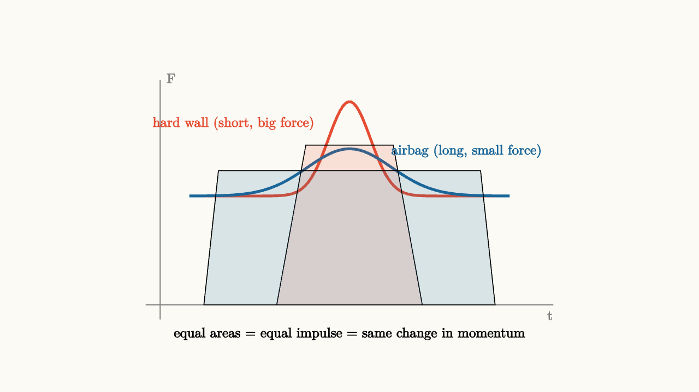
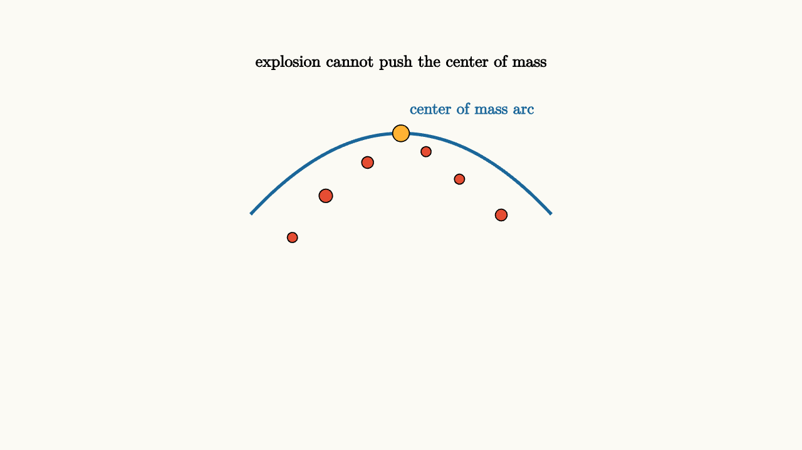

Momentum Travels Through Collisions
Here is a puzzle that bothers most students the first time they see it.
A ping-pong ball rolls toward a bowling ball that is sitting still. They collide. The ping-pong ball bounces back, moving faster than it was before. The bowling ball barely moves.
Now reverse the situation: the bowling ball rolls toward the stationary ping-pong ball. After the collision, the bowling ball continues almost as if nothing happened, and the ping-pong ball shoots forward at roughly twice the bowling ball's speed.
Why the asymmetry? The collision involves the same two objects and the same forces. What determines who bounces back and who passes through?
The answer is momentum.
Momentum: Mass Times Velocity
Momentum is defined as
This formula is simple, but the combination of mass and velocity captures something physically meaningful. A bowling ball moving at 2 m/s has vastly more momentum than a ping-pong ball at the same speed, because the bowling ball's mass dominates. A ping-pong ball moving at 200 m/s could match it only with tremendous speed.
Momentum is a vector. Direction matters. A ball moving left and a ball moving right have momenta in opposite directions. If they have equal mass and speed, their momenta cancel when added.
The first thing to check in any collision: before adding momenta, get the directions right.
Force as Rate of Momentum Change
Newton's second law has an elegant reformulation in terms of momentum:
This is actually Newton's original statement of the law. When mass is constant, $d\vec{p}/dt = m\,d\vec{v}/dt = m\vec{a}$, which gives the familiar $F = ma$. But the momentum form is more general and reveals something deeper: force is not just about acceleration. It is about the rate at which momentum is transferred.
This reframing changes how you think about collisions. During a collision, the two objects exert forces on each other. Those forces change momentum. The question becomes: how much momentum was transferred, and to whom?
Impulse: The Time Integral of Force
If force is the rate of momentum change, then the total change in momentum over a time interval is the integral of force over that interval. This is called impulse:
Impulse equals change in momentum. This is the impulse-momentum theorem.
This theorem explains a beautiful engineering principle: why do airbags save lives?
When a car crashes, the passengers must go from highway speed to zero. The required change in momentum is fixed. It depends on mass and initial speed. Nothing can change that. What airbags do is extend the time over which the momentum change happens.
From $J = F \cdot \Delta t = \Delta p$, a longer stopping time $\Delta t$ means a smaller average force $F$. The same momentum change, spread over more time, results in less force on the body. Less force means less injury.

source
background = [0.985, 0.98, 0.955, 1]
camera = Camera(4.8b)
mesh diagram = block {
. stroke{GRAY, 1.2} Line(start: [-2.8, -1.5, 0], end: [2.8, -1.5, 0])
. stroke{GRAY, 1.2} Line(start: [-2.6, -1.7, 0], end: [-2.6, 1.6, 0])
. stroke{RED, 3} ExplicitFunc(|t| 1.3 * exp(-6.0 * t * t), [-2.2, 2.2, 120])
. stroke{BLUE, 3} ExplicitFunc(|t| 0.65 * exp(-1.5 * t * t), [-2.2, 2.2, 120])
. fill{alpha{0.15} RED} Polygon(vertices: [[-1.0, -1.5, 0], [1.0, -1.5, 0], [0.6, 0.7, 0], [-0.6, 0.7, 0]])
. fill{alpha{0.15} BLUE} Polygon(vertices: [[-2.0, -1.5, 0], [2.0, -1.5, 0], [1.8, 0.35, 0], [-1.8, 0.35, 0]])
. color{RED} center{[-1.6, 1.0, 0]} Text("hard wall (short, big force)", 0.68)
. color{BLUE} center{[1.6, 0.62, 0]} Text("airbag (long, small force)", 0.68)
. color{GRAY} center{[2.75, -1.65, 0]} Text("t", 0.68)
. color{GRAY} center{[-2.45, 1.62, 0]} Text("F", 0.68)
. color{BLACK} center{[0, -1.9, 0]} Text("equal areas = equal impulse = same change in momentum", 0.68)
}
"impulse comparison"
play Fade(0.6)The two colored regions have the same area (same impulse, same change in momentum), but very different peak forces. The airbag curve is flatter and wider. Crumple zones in cars work on the same principle, extending the stopping time to reduce peak forces on passengers.
Conservation of Momentum: Where It Comes From
Now for the central result. Consider two objects in a collision with no external horizontal forces acting.
Object A exerts force $\vec{F}_{AB}$ on object B. By Newton's third law, object B exerts force $\vec{F}_{BA} = -\vec{F}_{AB}$ on object A.
In a time interval $\Delta t$, the impulse on A is $\vec{F}_{BA} \cdot \Delta t = \Delta\vec{p}_A$. The impulse on B is $\vec{F}_{AB} \cdot \Delta t = \Delta\vec{p}_B$.
Since $\vec{F}_{BA} = -\vec{F}_{AB}$, we get $\Delta\vec{p}_A = -\Delta\vec{p}_B$.
Therefore:
The total momentum of the system does not change. Conservation of momentum is a direct consequence of Newton's third law applied over time.
This is beautiful. The internal forces of the collision are invisible to the total momentum. They can be enormous, brief, and complicated. They can crush metal, heat surfaces, emit sound. Yet they always come in opposite pairs, so their total effect on the system's momentum is exactly zero.
source
background = [0.985, 0.98, 0.955, 1]
camera = Camera(4.8b)
"before collision"
mesh surface = stroke{GRAY, 1.5} Line(start: [-3.2, -1.1, 0], end: [3.2, -1.1, 0])
mesh ball1 = fill{alpha{0.2} BLUE} stroke{BLUE, 2} center{[-2.0, -0.55, 0]} Circle(0.38)
mesh ball2 = fill{alpha{0.2} ORANGE} stroke{ORANGE, 2} center{[1.0, -0.55, 0]} Circle(0.55)
mesh p1_arrow = color{BLUE} Arrow(start: [-2.0, -0.55, 0], end: [-0.95, -0.55, 0])
mesh p2_arrow = color{ORANGE} Arrow(start: [1.0, -0.55, 0], end: [0.45, -0.55, 0])
mesh lbl1 = color{BLUE} center{[-2.0, 0.25, 0]} Text("p = mv (right)", 0.68)
mesh lbl2 = color{ORANGE} center{[1.0, 0.48, 0]} Text("p = Mv (left)", 0.68)
mesh total = color{BLACK} center{[0, 1.55, 0]} Text("total momentum = sum of arrows", 0.7)
play Write(0.9)
"during collision"
p1_arrow = color{BLUE} Arrow(start: [-1.0, -0.55, 0], end: [-0.3, -0.55, 0])
p2_arrow = color{ORANGE} Arrow(start: [-0.3, -0.55, 0], end: [-1.0, -0.55, 0])
ball1 = fill{alpha{0.2} BLUE} stroke{BLUE, 2} center{[-0.65, -0.55, 0]} Circle(0.38)
ball2 = fill{alpha{0.2} ORANGE} stroke{ORANGE, 2} center{[-0.05, -0.55, 0]} Circle(0.55)
total = color{BLACK} center{[0, 1.55, 0]} Text("internal forces are equal and opposite", 0.7)
play Trans(1.0)
"after collision"
ball1 = fill{alpha{0.2} BLUE} stroke{BLUE, 2} center{[-1.8, -0.55, 0]} Circle(0.38)
ball2 = fill{alpha{0.2} ORANGE} stroke{ORANGE, 2} center{[0.8, -0.55, 0]} Circle(0.55)
p1_arrow = color{BLUE} Arrow(start: [-1.8, -0.55, 0], end: [-2.85, -0.55, 0])
p2_arrow = color{ORANGE} Arrow(start: [0.8, -0.55, 0], end: [1.55, -0.55, 0])
total = color{BLACK} center{[0, 1.55, 0]} Text("total momentum unchanged", 0.7)
play Trans(1.1)Back to the Ping-Pong Puzzle
Now we can resolve the puzzle. The key quantity is not kinetic energy. Momentum is conserved in both scenarios. Let's be quantitative.
Say the ping-pong ball has mass $m = 0.003 \text{ kg}$ and the bowling ball has mass $M = 7 \text{ kg}$. Both move at speed $v = 2 \text{ m/s}$ toward each other.
In Scenario 1 (ping-pong ball moving right, bowling ball at rest), total initial momentum is $p = mv = 0.006 \text{ kg m/s}$ to the right.
After an elastic collision (we'll define elastic next), the ping-pong ball bounces back at nearly $2v = 4 \text{ m/s}$ to the left, and the bowling ball barely moves. The ping-pong ball's momentum changed by $2mv$ to the left. The bowling ball gained $2mv$ to the right. Total unchanged.
The bowling ball "donates" almost no momentum but gives the ping-pong ball a huge velocity change because the mass ratio is so extreme. This is physics being consistent with the ratio $M \gg m$.
Elastic vs. Inelastic Collisions
Momentum is always conserved in collisions with no net external impulse. Kinetic energy is a separate question.
In an elastic collision, kinetic energy is conserved. Billiard balls approximate this. The interaction acts like a spring, storing and fully returning energy. The math gives both momentum and energy equations:
In a perfectly inelastic collision, the objects stick together after impact. Kinetic energy is lost (to heat, sound, deformation), but momentum is still conserved:
source
param ratio = 1.0
background = [0.985, 0.98, 0.955, 1]
camera = Camera(4.8b)
"elastic collision, vary mass ratio"
mesh surface = stroke{GRAY, 1.5} Line(start: [-3.2, -1.1, 0], end: [3.2, -1.1, 0])
mesh ball1 = fill{alpha{0.2} BLUE} stroke{BLUE, 2} center{[-1.8, -0.7 + 0.18 * $ratio, 0]} Circle(0.15 + 0.18 * $ratio)
mesh ball2 = fill{alpha{0.2} ORANGE} stroke{ORANGE, 2} center{[1.2, -0.55, 0]} Circle(0.38)
mesh v1 = color{BLUE} Arrow(start: [-1.8, -0.7 + 0.18 * $ratio, 0], end: [-0.85, -0.7 + 0.18 * $ratio, 0])
mesh lbl_mass = color{BLUE} center{[-1.8, 1.3, 0]} Text("mass = m1 (varies)", 0.68)
mesh lbl_ratio = color{BLACK} center{[0, 1.75, 0]} Text("mass ratio determines final velocities", 0.7)
play Write(0.8)
"heavy ball keeps going"
ratio = 2.8
play Lerp(1.5)
"light ball bounces back"
ratio = 0.4
play Lerp(1.5)The Center of Mass: A Calm Reference Point
Here is a surprising consequence of momentum conservation: the center of mass of a system moves steadily, even during chaotic internal interactions.
The center of mass position is defined as
Differentiating:
If total momentum is conserved, the center of mass velocity is constant. External forces change the center of mass motion. Internal forces cannot.
Watch fireworks explode. The burst is chaotic and spectacular, with fragments flying in all directions. Yet if you track the center of mass of all the fragments, it follows the same parabolic arc the undetonated firework would have followed. Internal explosions cannot push the center of mass. Only gravity acts as an external force on the system.

source
background = [0.985, 0.98, 0.955, 1]
camera = Camera(4.8b)
mesh diagram = block {
. stroke{BLUE, 3} ExplicitFunc(|x| -0.3 * x * x + 1.1, [-1.8, 1.8, 80])
. fill{ORANGE} center{[0, 1.1, 0]} Circle(0.1)
. fill{RED} center{[-0.9, 0.35, 0]} Circle(0.08)
. fill{RED} center{[0.3, 0.88, 0]} Circle(0.06)
. fill{RED} center{[-0.4, 0.75, 0]} Circle(0.07)
. fill{RED} center{[0.7, 0.55, 0]} Circle(0.06)
. fill{RED} center{[-1.3, -0.15, 0]} Circle(0.06)
. fill{RED} center{[1.2, 0.12, 0]} Circle(0.07)
. color{BLUE} center{[0.85, 1.4, 0]} Text("center of mass arc", 0.68)
. color{BLACK} center{[0, 1.95, 0]} Text("explosion cannot push the center of mass", 0.7)
}
"fireworks center of mass"
play Fade(0.6)Solving Collision Problems: A Strategy
When you encounter a collision problem, work through these steps.
First, identify the system and check whether external impulses are negligible during the collision. For horizontal collisions on a surface, gravity and normal force cancel, so horizontal momentum is conserved. For vertical collisions, gravity may not be negligible over long times, but over the brief collision itself, it usually is.
Second, write the conservation of momentum equation:
This is always a vector equation. Work component by component.
Third, decide whether the collision is elastic, inelastic, or perfectly inelastic. If elastic, write the energy conservation equation too. If perfectly inelastic, the objects stick and you have one final velocity.
Fourth, solve. The momentum equation gives you one equation per direction. The energy equation (if needed) gives another.
The critical mistake to avoid: momentum conservation does not depend on whether kinetic energy is conserved. You always conserve momentum. Whether you also conserve kinetic energy depends on the type of collision.
An Unexpected Connection: Rockets
Rocket propulsion is momentum conservation in action. A rocket ejects exhaust gases backward at high speed. By momentum conservation, the rocket itself must gain momentum forward. There is no need for anything to push against; the exhaust provides the reaction.
The rocket equation, derived from momentum conservation, describes how a rocket's speed changes as it burns fuel:
where $v_e$ is the exhaust speed, $m_i$ is the initial mass (rocket plus fuel), and $m_f$ is the final mass (just the rocket).
The logarithm means that to double the speed change, you need to square the mass ratio. This is why chemical rockets must carry enormous amounts of fuel relative to their payload, and why getting to orbit is so difficult. The universe enforces momentum conservation strictly, and rockets work by exploiting it, not by escaping it.